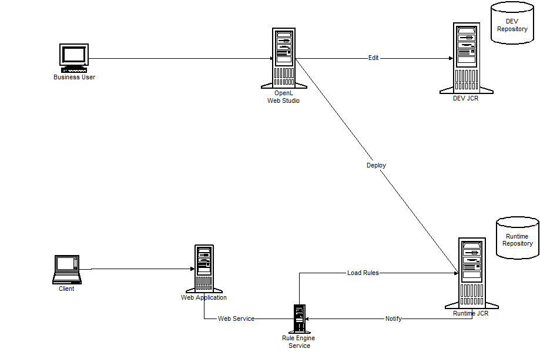
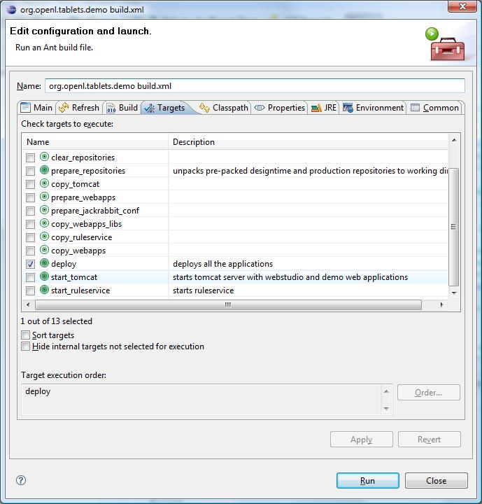
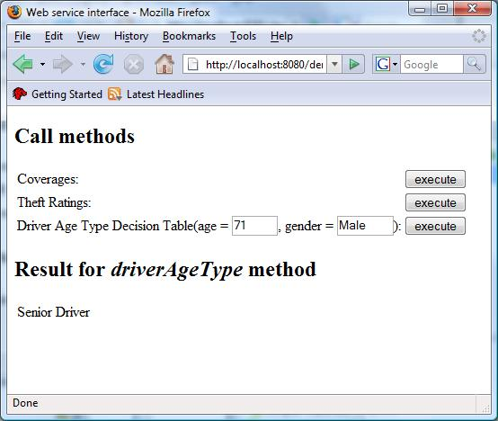
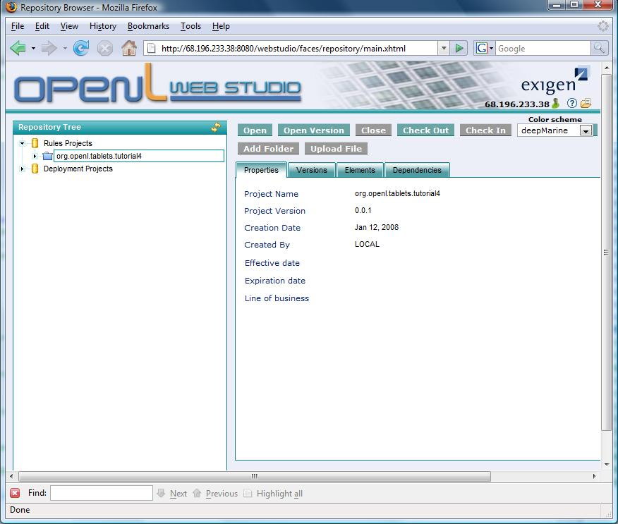
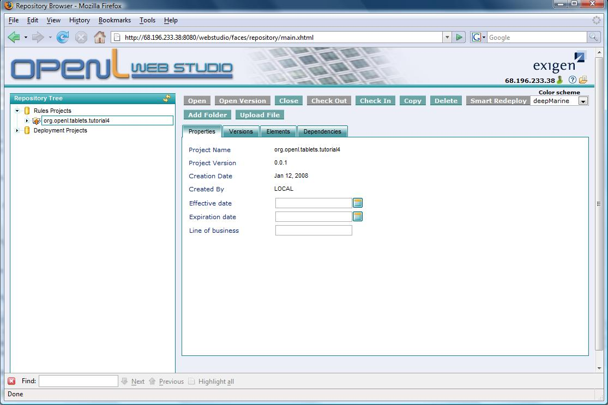
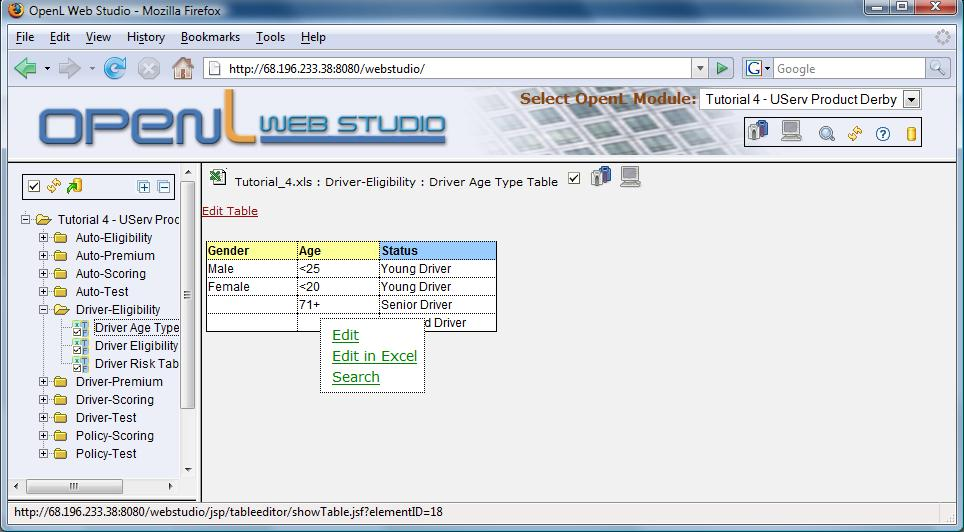
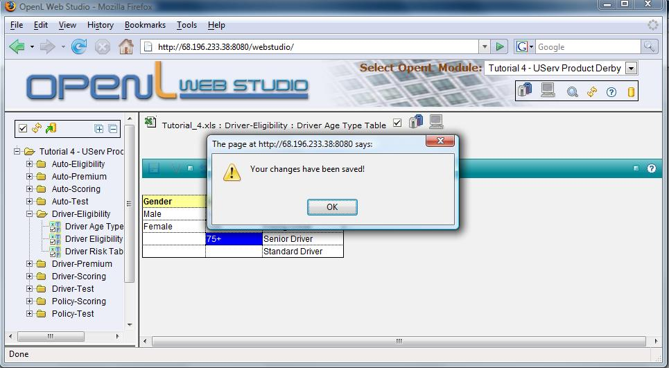
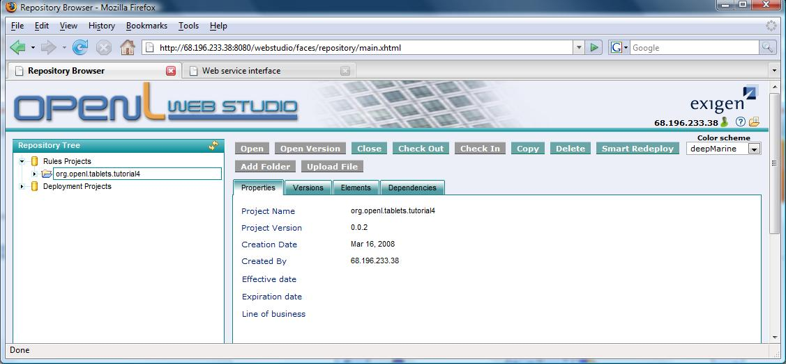
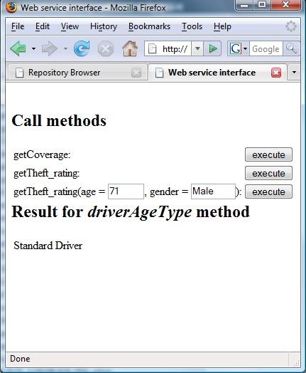

Rule Service and Repository Demo
This is a full-functional demo that will show you how OpenL Web Studio, repository and
runtime application work together. It is a complex demo that requires a careful following of
the installation instructions.
Logical Architecture
The architecture scheme is shown on the Figure 1

This figure shows a recommended architecture for OpenL Web Studio and runtime deployment. It consists of the following components:
OpenL Web Studio deployed on the Web Application Server (such as Tomcat, Weblogic or Websphere). OpenL Web Studio supports multiple concurrent business clients
Development JCR-based repository (DEV) - working repository where multiple versions of OpenL and other Eclipse projects are stored and managed during development stage
Runtime JCR-based Repository - repository that is used for deployment of the finished solutions, that may consist of multiple interdependent projects.
OpenL Web Studio explicitly supports two repositories (DEV and Runtime) - we consider this to be the optimal configuration for enterprise deployment.
Rule Engine Service - Rule Engine deployed in runtime environment and exposed as Web Service application. There can be multiple Rule Engine Service instances
providing a scalable solution
Demo Web Application - application that uses Rule Engine Service via SOAP over HTTP - this is a typical distribution schema for a rule engine application
Actual Architecture
For the purposes of the demo OpenL Web Studio, Demo Web Application, and both repositories are deployed at the same instance of Tomcat application server.
Rule EngineService starts as a separate java process.
Deploying and running demo step-by-step
Step 1. Create Eclipse project
Select Eclipse menu File | New | Project. Then select OpenL Tablets | Tools | Application Demo based on Tutorial 4.

Press Next and create a project named org.openl.tablets.demo. It will appear in Eclipse Project Explorer
Step 2. Unpack demo files using Ant script
This demo project comes pre-packaged with all the files that are required for the web part of the demo. The installation of the demo
is handled by the Ant script build.xml located in the project's root folder.
Before doing the next step make sure that a variable plugin.base.path points into the right location.
It is pre-configured for the configuration(default for OpenL Tablets) where both folders plugins/
and workspace/ are located in the same eclipse/ folder.
Right-click on build.xml and select Run As | 2 Ant Build.
In Run Window select deploy task and press Run

Demo will be deployed into /openl folder
Step 3. Start Tomcat server and Rule Engine Service
First start Tomcat and then Rule Service using different tasks from build.xml.
The order is important, because Rule Service is dependent on JCR repository deployed on Tomcat.
Tomcat start requires that System Variable JAVA_HOME have been set to jdk1.5-compatible environment.
If you have problems starting Tomcat open /openl/Tomcat5.5/bin folder and run startup.bat
manually.
Step 4. Start simple Demo Web Application and check that is works
Point browser to http://localhost:8080/demo and run the application.
For example, if you enter age of the driver = 71 and gender = Male and press Execute button,
the application will display Senior Driver

Step 5. Updating rules - Opening Web Studio
The following procedures will consist of multiple steps, here is a brief summary what is going to happen:
We will check-out rule project in design-time repository
We will edit rule table using Web Studio Table Editor and save
We will check-in the rules project
We will deploy the checked-in project into runtime repository
Rule Service will automatically receive notification event and reload the newly deployed project
When we execute Demo Web Application again we will see the updated result (magic!!!)
Now we can open Web Studio by clicking http://123.123.123.123:8080/webstudio.
You need to replace 123.123.123.123 with your server IP address, but you can not use localhost due to the known issue.
To get IP address on Windows run
ipconfig in the command console window (DOS window).
The screen will show Web Studio with error message, because Local Workspace is empty.
Step 6. Updating Rules - Check-out the project
Switch to Repository View by clicking on the Rules Repository icon  .
.

Select the project org.openl.tablets.tutorial4 and click Check Out button.

Switch to local workspace to edit project by clicking Open LWS in Web Studio icon

Step 7. Edit rules in Web Studio
Select Decision Table Driver-Eligibility/Driver Age Type and place cursor over the cell
containing 71+. After pop-up menu appears, click Edit.

In Table Editor change value to 75+ and click Save icon.

Step 8. Check-in the project into repository
Press on Check-in icon  .
Switch to the Repository View. Now you can see that the project has version 0.0.2
in the design-time repository.
.
Switch to the Repository View. Now you can see that the project has version 0.0.2
in the design-time repository.

Step 9. Deploy the project into runtime repository
In the Repository View press Smart Redeploy button.
Smart Redeploy dialog will appear. Select tutorial4 project and
press Deploy button.
The project is now deployed in runtime repository. Rule Service automatically
reloads the deployed project. Now if we go back to our Demo Web Application and run query again
we will see the different result:

Step 10. The last word
Congratulations!!! You have mastered the most complex OpenL Tablets demo to date,
now it is time to relax and take another look at the picture at the beginning of
this document to get another look at OpenL Tablets recommended architecture.
Please don't forget to send us your feedback.